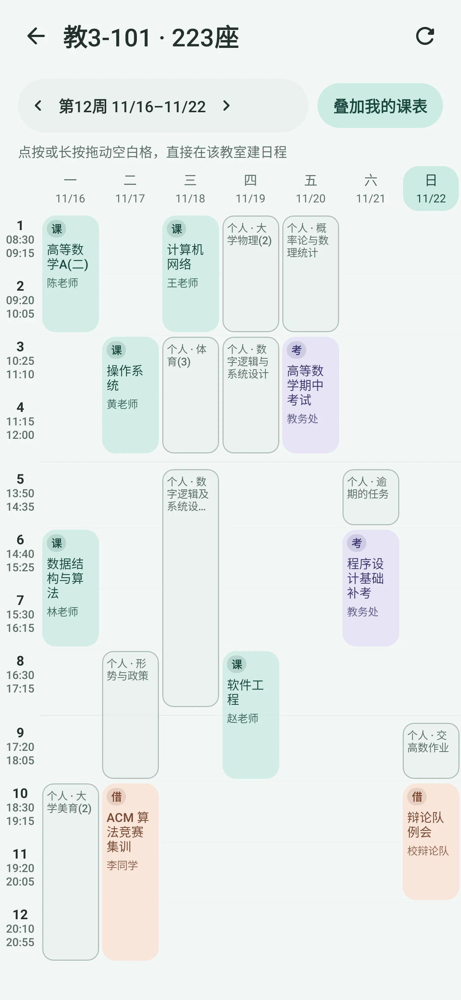
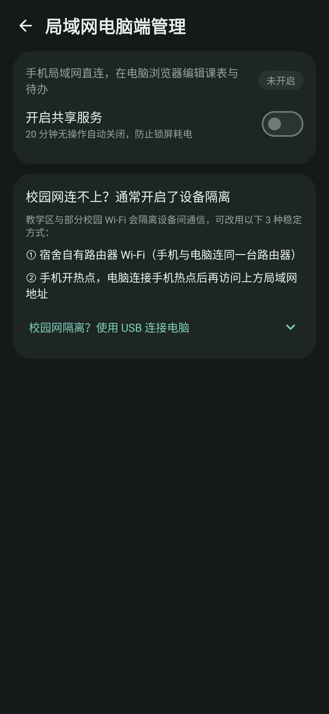

智能空教室 & 7×12 教室周课表
5 校区筛选 + 节次过滤「仅看空闲」，点进看整周课表、自动叠加个人课表防撞车、长按框选空位直建日程。


不用点开 App——下节课进度、今日日程、待办勾选、菜鸟取件码与考场座位直铺桌面。悬停或点击任意微件聚焦查看。
进入教3-101 7×12 周课表自动叠加你的个人课程防撞车。直接在右侧 周四 6–7 节纯白空位 按住向下拖拽，体验原生 BoxSel 弹簧框选。

围绕广工教务生态、流畅日程待办与国产防杀保活，纯本地优先运行，轻量克制。
5 校区筛选 + 节次过滤「仅看空闲」，点进看整周课表、自动叠加个人课表防撞车、长按框选空位直建日程。
已获学分 / 总学分统计，支持按课程类别或单科勾选实时重算 GPA，学业进度一目了然。
今日 与 下一日程 小组件直显考试地点与座位号（如 教1-203 · 18座）。
AES 加密统一认证登录、全学期课表与实验分批折叠、每周增量同步、单周调课「课表选位」、体测成绩查询。
支持四校区铃声预设，遇到特殊跨区选修课也可单独覆盖作息，日常无感省心。
今日 / 课表 / 日历 / 待办 / 我的，8 组低饱和植物色块、多套植物主题、动态取色与深浅双模式。
底部单行自然语言录入与优先级高亮；自动提取快递取件短信生成票据胶囊，轻触复制不振动。
上课自动勿扰、国产 ROM 后台保活 3 步自检、系统日历同步与 .ics 标准导入导出。
手机端一键开启局域网共享，电脑浏览器零安装管理；配合 Go + SQLite 自建同步与 MCP 接口，让大模型直接帮你调度日程。


手机一键启停本地服务端，电脑浏览器零安装管理课表与待办（无外链严格 CSP）。
单二进制轻量化服务端，多端增量同步、离线编辑冲突消解与完整 JSON 备份。
本地/云端 MCP 工具接入 AI 助手自然语言调度日程；QuickJS 沙箱支持批量调停课与差异预览回滚。
点击下方章节胶囊，直接跳转对应画面片段。
支持按模块筛选、一键切换浅色/深色模式，点击任意截图可放大查看。